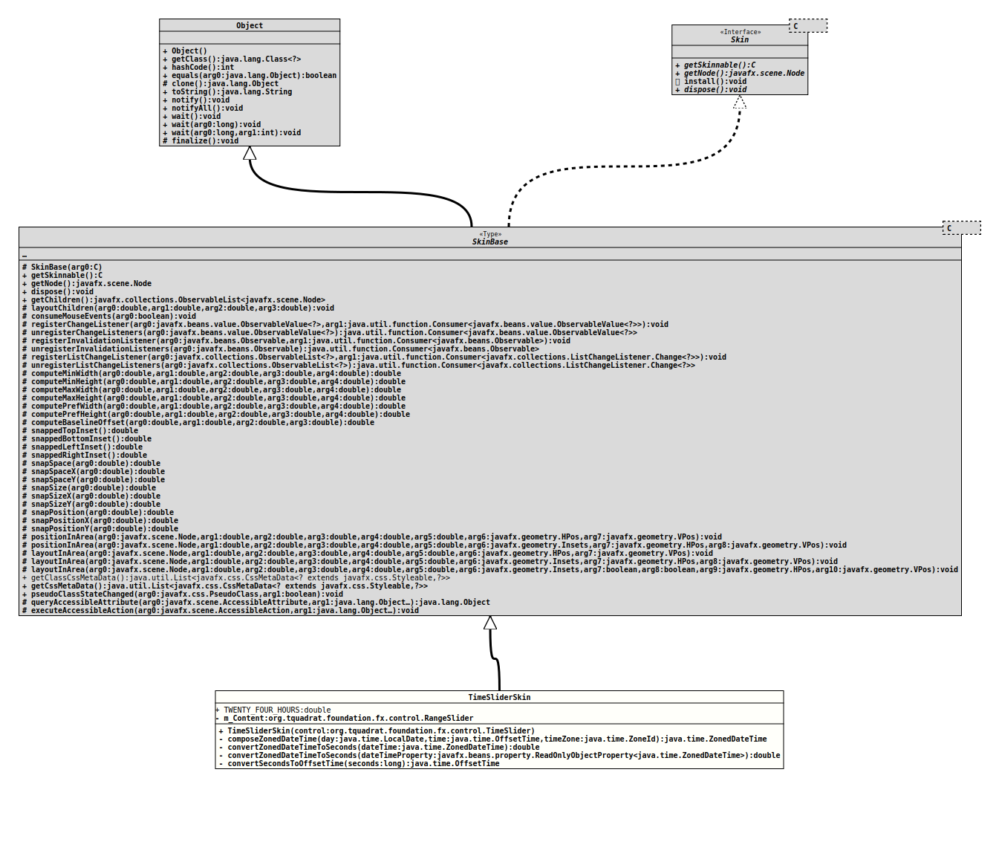

Module org.tquadrat.foundation.fx
Class TimeSliderSkin
- All Implemented Interfaces:
Skin<TimeSlider>
@ClassVersion(sourceVersion="$Id: TimeSliderSkin.java 1121 2024-03-16 16:51:23Z tquadrat $")
@API(status=STABLE,
since="0.4.6")
public class TimeSliderSkin
extends SkinBase<TimeSlider>
The default skin for instances of
TimeSlider.- Author:
- Thomas Thrien (thomas.thrien@tquadrat.org)
- Version:
- $Id: TimeSliderSkin.java 1121 2024-03-16 16:51:23Z tquadrat $
- Since:
- 0.4.6
- UML Diagram
-

UML Diagram for "org.tquadrat.foundation.fx.control.skin.TimeSliderSkin"
{kind=link}
-
Nested Class Summary
Nested ClassesModifier and TypeClassDescriptionprivate final classTheStringConverter.toString(Object)method of this implementation ofStringConvertertakes a number representing the number of seconds since the beginning of the epoch, converts it to an instance ofOffsetDateTime, takes the time portion of it and converts that to aString. -
Field Summary
FieldsModifier and TypeFieldDescriptionprivate final RangeSliderTheRangeSliderinstance that does the work for theTimeSlider.static final doubleNearly 24h in seconds: 86399.0. -
Constructor Summary
ConstructorsConstructorDescriptionTimeSliderSkin(TimeSlider control) Creates a new instance ofTimeSliderSkin. -
Method Summary
Modifier and TypeMethodDescriptionprivate final ZonedDateTimecomposeZonedDateTime(LocalDate day, OffsetTime time, ZoneId timeZone) Composes an instance ofZonedDateTimefrom the given components.private final OffsetTimeconvertSecondsToOffsetTime(long seconds) Convert the givenlongvalue, representing the seconds since the start of the epoch, to an instance ofOffsetTime.private final doubleconvertZonedDateTimeToSeconds(ZonedDateTime dateTime) Converts the givenZonedDateTimeto seconds since the start of the epoch.private final doubleconvertZonedDateTimeToSeconds(ReadOnlyObjectProperty<ZonedDateTime> dateTimeProperty) Converts theZonedDateTimevalue of the givenObjectPropertyto seconds since the start of the epoch.Methods inherited from class javafx.scene.control.SkinBase
computeBaselineOffset, computeMaxHeight, computeMaxWidth, computeMinHeight, computeMinWidth, computePrefHeight, computePrefWidth, consumeMouseEvents, dispose, executeAccessibleAction, getChildren, getClassCssMetaData, getCssMetaData, getNode, getSkinnable, layoutChildren, layoutInArea, layoutInArea, layoutInArea, positionInArea, positionInArea, pseudoClassStateChanged, queryAccessibleAttribute, registerChangeListener, registerInvalidationListener, registerListChangeListener, snappedBottomInset, snappedLeftInset, snappedRightInset, snappedTopInset, snapPosition, snapPositionX, snapPositionY, snapSize, snapSizeX, snapSizeY, snapSpace, snapSpaceX, snapSpaceY, unregisterChangeListeners, unregisterInvalidationListeners, unregisterListChangeListeners
-
Field Details
-
TWENTY_FOUR_HOURS
Nearly 24h in seconds: 86399.0.- See Also:
-
m_Content
TheRangeSliderinstance that does the work for theTimeSlider.
-
-
Constructor Details
-
TimeSliderSkin
Creates a new instance ofTimeSliderSkin.- Parameters:
control- The reference for the control.
-
-
Method Details
-
composeZonedDateTime
Composes an instance ofZonedDateTimefrom the given components.- Parameters:
day- The day.time- The time.timeZone- The time zone.- Returns:
- The zoned date time instance.
-
convertZonedDateTimeToSeconds
Converts the givenZonedDateTimeto seconds since the start of the epoch.- Parameters:
dateTime- The time and date.- Returns:
- The seconds since the epoch.
-
convertZonedDateTimeToSeconds
private final double convertZonedDateTimeToSeconds(ReadOnlyObjectProperty<ZonedDateTime> dateTimeProperty) Converts theZonedDateTimevalue of the givenObjectPropertyto seconds since the start of the epoch.- Parameters:
dateTimeProperty- The property with the time and date.- Returns:
- The seconds since the epoch.
-
convertSecondsToOffsetTime
Convert the givenlongvalue, representing the seconds since the start of the epoch, to an instance ofOffsetTime.- Parameters:
seconds- The seconds.- Returns:
- The offset time.
-